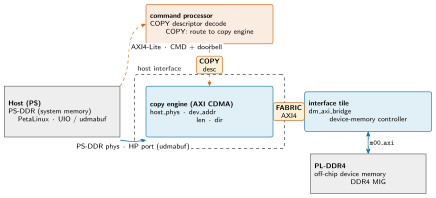

mininpu: Host Interface¶
The host interface is the host-memory connection unit in the four-unit mininpu (charter §3). Its sole active element in v1 is a device-owned copy engine (an off-the-shelf AXI CDMA IP) that services COPY descriptors issued by the command processor over the COPY interface. On receipt of a COPY descriptor {host_phys, dev_addr, len, dir}, the copy engine DMAs directly between PS-DDR (host system memory, via the Zynq PS HP port) and PL-DDR4 (device memory, via the interface tile over FABRIC) over the AXI fabric. Linux is not in the transfer loop. This document covers the data path, the memcpy flow, the v1 runtime (PetaLinux + UIO + udmabuf), and the portability rationale. The authoritative ABI surface is owned by mininpu/abi.py (→ regmap_pkg.sv); this document cites it without restating it.
Host-interface data path¶
Slide summary (from the deck build)
- Copy engine (AXI CDMA): services COPY {
host_phys,dev_addr,len,dir} from the command processor over the COPY interface; AXI4 master into PS-DDR (HP port) and into PL-DDR4 (FABRIC). - Linux is NOT in the loop: udmabuf phys-direct (SMMU bypass); no host-side DMA engine.
Figure: hi-datapath

Figure: hi-datapath
Host-interface data path. The host (PS-DDR, PetaLinux / UIO / udmabuf) writes a COPY descriptor and rings the doorbell; the command processor decodes it and issues a COPY descriptor to the copy engine over the COPY interface. The copy engine (AXI CDMA) DMAs between PS-DDR (host system memory, via the HP port) and PL-DDR4 (device memory, via the interface tile over FABRIC AXI4) directly over the AXI fabric. Linux is not in the transfer loop; PS-DDR buffers are udmabuf allocations (contiguous physical, SMMU bypass).
The host interface unit sits between the command processor (which issues COPY descriptors over the COPY interface) and the interface tile (which owns the device-memory controller over FABRIC). Its sole active element is the copy engine: an off-the-shelf AXI CDMA IP configured as an AXI4 master on both sides of the fabric. On the host side it drives the Zynq PS HP port, a high-performance AXI4 slave port into PS-DDR; on the device side it drives FABRIC, the AXI4 link to the interface tile's dm_axi_bridge, which converts to m00_axi INCR bursts into the PL-DDR4 MIG. Both ports are standard AXI4 INCR burst; the CDMA manages the transfer autonomously once its source address, destination address, and byte count registers are written. The host does not drive any AXI master for bulk data: it is a command-and-poll model. The interface tile is covered in its own document; DMEM (compute tile to interface tile) and the device-memory controller internals are not part of the host interface unit.
The memcpy flow (v1)¶
Slide summary (from the deck build)
- Host allocates a udmabuf buffer: contiguous physical region (CMA); kernel returns
host_phys. - Host polls
instr_ready == 1(CP idle), writes COPY descriptor {kind=COPY,dir,host_phys:64,dev_addr,len} to the CMD window, rings the self-clearing doorbell. - Command processor latches the CMD window on the doorbell edge; issues a COPY descriptor to the copy engine over the COPY interface.
- Copy engine programs the AXI CDMA (
SA/DA/BTT) and releases it; CDMA DMAs PS-DDR ↔ PL-DDR4 over the AXI fabric autonomously. BothSAandDAmust be 32-byte aligned: the v1 CDMA is 256-bit with no DRE (PG034), so an unaligned address raisesDMAIntErr; the runtime rejects it before issuing the descriptor. - Completion: command processor drives
instr_readyhigh; host polls before the next doorbell. v1 = sequential, depth-1.
Step 1: allocate a contiguous host buffer. The host runtime (PetaLinux + C/C++) opens a udmabuf device node. The kernel allocates a contiguous physical region (CMA-backed) and returns both a user-space virtual address (for CPU read/write) and the physical address (host_phys). The SMMU is bypassed: host_phys is a real physical address, not an IOVA; the CDMA programs it directly.
Step 2: write a COPY descriptor and ring the doorbell. Before ringing, the host polls instr_ready == 1 to confirm the command processor is idle (backpressure = -EBUSY if not; charter §4). The host packs a COPY descriptor (charter §4, ABI 8): kind=COPY, dir (H2D or D2H), host_phys (64-bit physical address), dev_addr (device memory offset), len (byte count). It writes the descriptor into the write-only CMD window via UIO (memory-mapped MMIO) and writes the doorbell bit (slv_reg0[4]), which is self-clearing (consumed and auto-cleared by the command processor on the rising edge).
Step 3: command processor decode and COPY dispatch. The command processor latches the CMD window on the doorbell edge, decodes kind=COPY, and issues a COPY descriptor {host_phys, dev_addr, len, dir} to the copy engine over the COPY interface.
Step 4: AXI CDMA transfer. The copy engine programs the AXI CDMA source address (SA), destination address (DA), and byte-to-transfer (BTT) registers, then releases the transfer. Both the source (SA) and destination (DA) addresses must be 32-byte aligned: the v1 CDMA is configured at 256-bit and the Data Realignment Engine (DRE) is unavailable at that data width (Xilinx PG034), so an unaligned host_phys or dev_addr raises DMAIntErr (no data moves, and the error is sticky until a copy-engine soft reset). The runtime (mininpu/runtime/memcpy.py) enforces this: it rejects a misaligned COPY with a clear error before the descriptor ever reaches the CDMA. The CDMA drives two AXI4 masters simultaneously: the source master into PS-DDR via the HP port and the destination master to the interface tile via FABRIC. Linux is not in the transfer loop: there is no kernel DMA engine and no dma-proxy. Cache coherence is handled by construction: the udmabuf buffer is mapped non-cached (opened with O_SYNC), so CPU accesses bypass the data cache and no explicit flush or invalidate is required around the DMA. This avoids the classic non-coherent-HP-port stale-data trap; the cost is slower CPU access to the staging buffer, negligible for a write-once-then-DMA region. The buffer's physical address is stable for the lifetime of the udmabuf allocation.
Step 5: completion. When the CDMA completes, the command processor drives instr_ready high (charter §4). The host polls instr_ready before the next doorbell ring. v1 is sequential (depth-1 CMD window, host-mediated): there is at most one COPY or LAUNCH in flight at a time. Note: dma_slot_done is the compute tile's internal async-DMA completion token (charter §5); it is a separate signal and not the COPY completion path.
OS, drivers, and cache model¶
Slide summary (from the deck build)
- OS: PetaLinux (ZynqMP) suffices; standard boot chain FSBL → PMUFW → ATF → U-Boot → Linux.
- UIO (
generic-uio): DT nodes for the NPU register block + the AXI CDMA, mapped at/dev/uioX. - udmabuf (out-of-tree module) + reserved CMA; buffer opened
O_SYNC(non-cached), so no cache-management code. - SMMU not translating the PL master (ZynqMP default); HP port + PL-DDR4 MIG in the block design.
- Not needed: PYNQ,
dma-proxy, an in-kernel AXI-DMA/CDMAdmaenginedriver, an RTOS.
This unit owns the host-side OS and driver contract, so the runtime and board bring-up have a single reference.
OS. A standard PetaLinux (ZynqMP) image is sufficient; no custom distribution is required. The boot chain is the ordinary ZynqMP one: FSBL → PMU firmware → ATF (BL31) → U-Boot → Linux, with the bitstream loaded by the FSBL (or fpga_manager).
Register access (UIO). The NPU AXI4-Lite register block (CMD window, doorbell, instr_ready, dma_slot_done) and the AXI CDMA register block are exposed as generic-uio device-tree nodes (uio_pdrv_genirq); the user-space runtime mmaps /dev/uioX and pokes the registers directly. The CDMA is deliberately not bound to the in-kernel dmaengine driver, and dma-proxy is not used: the device commands its own copy engine.
Host buffers (udmabuf + CMA). The udmabuf out-of-tree kernel module (a PetaLinux recipe) allocates physically contiguous buffers from a reserved CMA region (sized via the cma= bootarg or a reserved-memory node) and exposes /dev/udmabufX. The runtime opens the node with O_SYNC for a non-cached mapping, which is what makes the memcpy path coherent with no explicit cache operations. Cached-with-explicit-sync and a coherent HPC port (CCI-400, dma-coherent, lower bandwidth) are alternatives; v1 uses the non-cached udmabuf as the minimal, known-good option.
SMMU and isolation. The ZynqMP SMMU does not translate the PL DMA master (its default state), so host_phys is used directly. The consequence: a PL master holding a physical address can reach any PS-DDR location. This is acceptable for a single-tenant appliance; a vfio-platform / SMMU path is the hardening option if isolation is later required.
Interconnect and engine choice. The PL→PS HP port carries the CDMA's PS-DDR traffic and the PL-DDR4 MIG backs device memory; both are instantiated in the board block design. An in-fabric AXI CDMA is chosen over the PS hardened GDMA/ADMA because the device must own its copy engine (the PS DMA is a host-side resource); the streaming AXI DMA does not apply (there is no stream endpoint). Nothing beyond the above is required.
Runtime and portability¶
Slide summary (from the deck build)
- Runtime: PetaLinux + C/C++ library; no bespoke kernel driver. UIO: MMIO for CMD window, doorbell,
instr_ready,dma_slot_done. udmabuf: phys-contiguous CMA-backed host buffers. No PYNQ, nodma-proxy. - SMMU bypass: udmabuf is phys-direct; no IOMMU isolation in v1.
- The CDMA is bundled under the device: a discrete accelerator owns its copy engine; the host only posts COPY descriptors (no host-side AXI master for bulk data).
- Host interface = target-specific shell: ZCU102 v1 = PS HP port + AXI CDMA; PCIe-class target ([v3]) = PCIe endpoint + native DMA engine. The COPY interface to the command processor is unchanged.
- Concurrent copy | compute = [v2]; v1 is sequential (FABRIC is single-master; depth-1 CMD window).
Runtime. The v1 runtime (charter §4) is a pure user-space C/C++ library on PetaLinux, requiring no bespoke kernel driver. UIO (userspace I/O) maps the NPU AXI4-Lite register window into the process address space: the runtime writes the CMD window and doorbell via memory-mapped stores and polls instr_ready and dma_slot_done via memory-mapped loads. v1 uses polling throughout (UIO interrupt is an easy later addition). udmabuf provides physically contiguous host buffers from user-space (CMA-backed); the kernel returns both a virtual address for CPU access and the physical address (host_phys) for the COPY descriptor. The SMMU is bypassed: udmabuf is phys-direct and there is no IOMMU isolation in v1. The runtime does not invoke any Linux DMA API for bulk transfers: the device itself commands its copy engine, so the host's involvement is confined to descriptor write, doorbell ring, and instr_ready poll. The former PYNQ-based runtime is fully replaced.
Portability. The CDMA is bundled under the device (charter §3). The industry model for discrete accelerators is that the device owns its DMA engine and its memory controller; the host posts high-level commands (COPY descriptors) via the command channel rather than driving AXI masters itself. Consequently the host interface and interface tile are target-specific shells, analogous to how an SRAM cell maps to BRAM (FPGA) or a standard-cell SRAM (ASIC). In ZCU102 v1, the host interface is the Zynq PS HP port plus the Xilinx AXI CDMA IP; in a PCIe-class target ([v3]) it would be a PCIe endpoint plus a PCIe-native DMA engine, with the COPY interface to the command processor unchanged. The portable IP core is the compute tile (with its DMU and SPAD); the host interface and interface tile are swapped per board and technology target.
v1 scope. Concurrent copy | compute is [v2]-deferred (charter §10). In v1, FABRIC is a single-master bus and there is at most one COPY or LAUNCH in flight at a time (depth-1 CMD window, host-mediated sequencing). v2 adds chip-level concurrency: the copy engine runs while the compute tile computes (an async-memcpy API, COPY does not block a concurrent LAUNCH); deeper queueing is left as implicit future work. The ABI surface for v1 is minimal: CMD window, doorbell, instr_ready, dma_slot_done; the authoritative field map is mininpu/abi.py (→ regmap_pkg.sv).